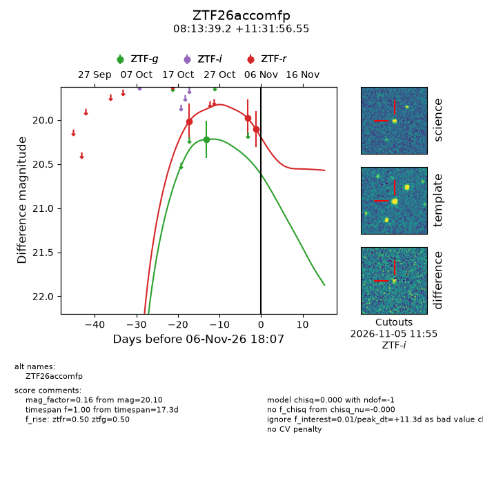
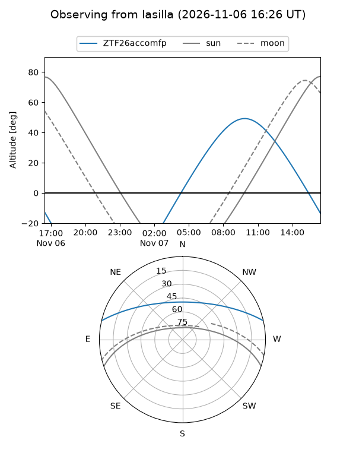
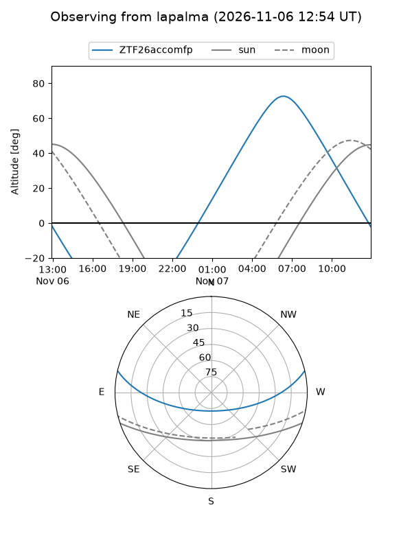
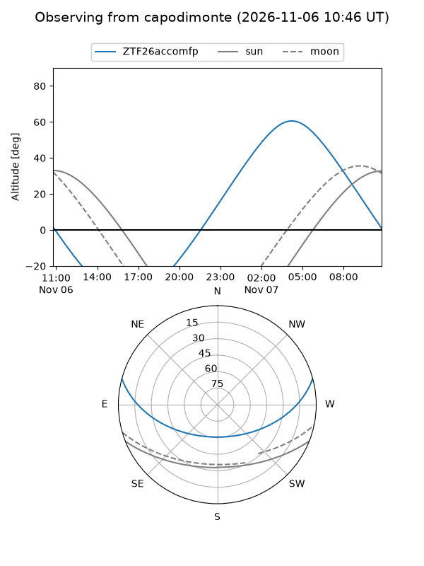
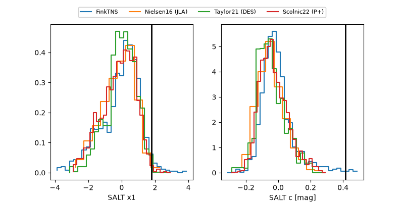

ZTF26accomfp
Target ZTF26accomfp at 2026-11-06 18:09
Aliases and brokers:
FINK-ZTF: ztf.fink-portal.org/ZTF26accomfp
Lasair-ZTF: lasair-ztf.lsst.ac.uk/objects/ZTF26accomfp
ALeRCE-ZTF: alerce.online/object/ZTF26accomfp
Direct TNS query: direct search
alt names
ZTF26accomfp (ztf,fink_ztf)
Coordinates:
equatorial (ra, dec) = 123.4131,+11.53237
equatorial (HMS+DMS) = 08:13:39.15,+11:31:56.55
galactic (l, b) = (211.6162,+23.41037)
Flags:
peak dt: +11.3
Photometry:
last ztfg=20.22, ztfr=20.10
1 ztfg, 3 ztfr detections
Lightcurve

Visibility



Additional plots
